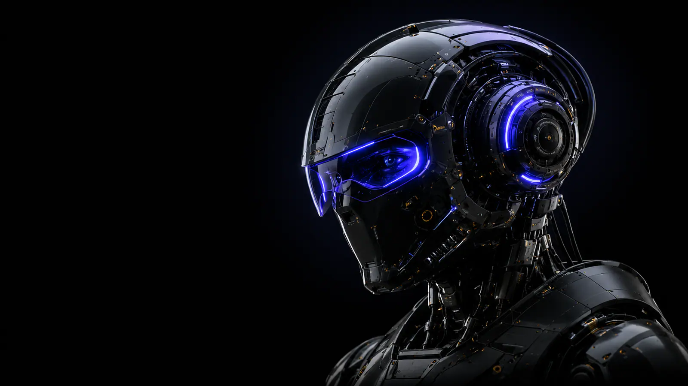
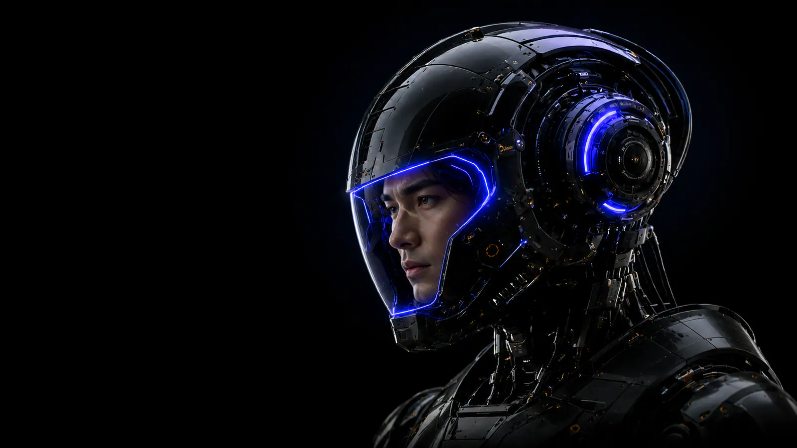
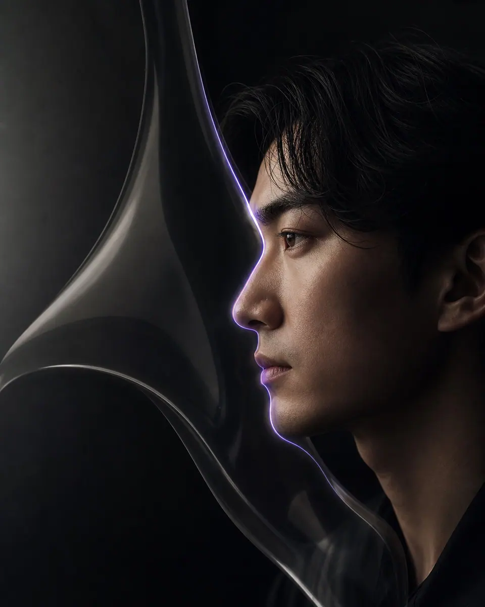
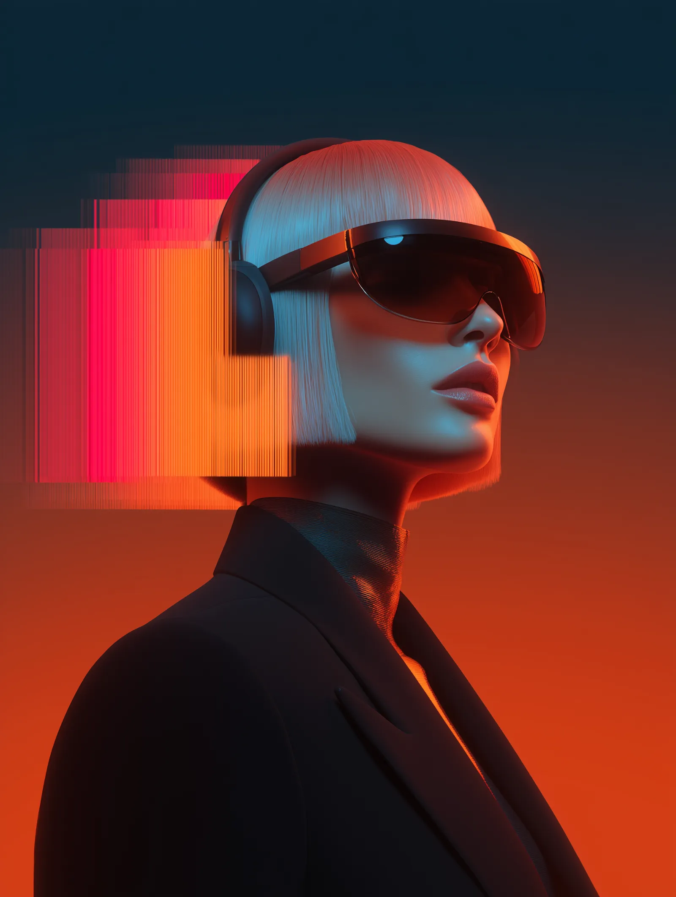
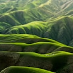

Deixe o essencial respirar.
Margens fluidas de 22–80px. Uma ideia forte por dobra. A informação se organiza por ritmo e alinhamento, com linhas finas em vez de caixas pesadas.


Precisão digital. Sensibilidade humana.
Um sistema para transformar o essencial
em experiências memoráveis.
Luz, matéria e intenção em equilíbrio.
O ponto de partida é o Noema: espaço negativo generoso, preto profundo, imagem com presença e um único sinal de luz. Vidro do GenLabs. Calor editorial do TerraSprint.
Margens fluidas de 22–80px. Uma ideia forte por dobra. A informação se organiza por ritmo e alinhamento, com linhas finas em vez de caixas pesadas.
Void e Paper como estrutura. Violeta como assinatura. Verde em contextos orgânicos e feedback. Glow localizado, nunca por trás de texto longo.
Entradas em cascata, brilho que atravessa o botão e fundos que respiram. Movimentos compartilham a mesma curva e respeitam a preferência por animação reduzida.
| Propriedade | Especificação |
|---|---|
| Espaçamento | 4, 8, 12, 16, 24, 32, 48, 64, 96, 144px. Gaps de 24px. Seções: clamp(80px, 9vw, 144px). |
| Grid | Conteúdo: 1440px máximo; margens clamp(22px, 4.6vw, 80px). 3 colunas → 1 em 800px. Paleta: 4 → 3 → 2. |
| Raios | 8px tooltip; 12px input; 16px swatch; 20px cards; 24px modal; 9999px botões e cápsulas. |
| Elevação | Inset 0 1px 0 rgba(255,255,255,.08); sombra de card 0 20px 60px rgba(0,0,0,.20). Vidro com blur 16px e superfície opaca de apoio. |
| Hero | .hero / .hero__visual / .hero__image--machine / .hero__image--human / .hero__halo, do Noema. 100svh, mínimo 760px; imagem full bleed, cópia em 68% e título com tracking −.075em. |
| Seções | .ds-group / .ds-head / .ds-top, dos catálogos. Borda 1px, grid ao fundo a baixa opacidade, bloom 14s e entradas de 900ms. Sem altura fixa no conteúdo. |
Sans para a presença. Manrope para a interface. Fraunces para o gesto editorial. A hierarquia usa tamanho e espaço; o peso nunca precisa gritar.
Display e títulos H1–H2. Stack: Arial, Helvetica, sans-serif. Fonte de sistema, sem requisição; pesos usados 500 e 600 com a disponibilidade de cada plataforma.
Body e interface. Stack: Manrope, Arial, sans-serif. WOFF2 local variável; declarações 400–700 do CSS de origem, com font-display: swap.
Acento editorial. Stack: Fraunces, Georgia, Times New Roman, serif. WOFF2 local variável 300–900, font-display: swap; 300 é o peso preferencial.
| Propriedade | Especificação |
|---|---|
| Hero display | Arial, Helvetica, sans-serif · 500 · clamp(76px,8.5vw,136px) · LH .91 · tracking −.075em · text-transform: none. Breakpoints: 800px → clamp(65px,12vw,94px); 430px → 68px. Acento Fraunces 300, 1.04em, tracking −.065em. |
| Código / HUD | Courier New, Courier, monospace · 400 · 11px · LH 1.8 · tracking 0 · text-transform: none. HUD: 10px, LH 1.45, tracking .1em, uppercase. Fonte de sistema, sem download. |
| Carregamento | Manrope e Fraunces vêm dos CSS locais originais do TerraSprint, com URLs relativas resolvidas no próprio stylesheet. Preload apenas do WOFF2 latino Manrope. Nenhuma fonte exige CDN. |
| Inter / GenLabs | O components.css do GenLabs é importado; seu body Inter é substituído pela stack Manrope desta adaptação. O vidro e .carousel-track mantêm os seletores originais. |
| Regras | Body limitado a 65ch, textos de apoio a 43ch. Uppercase só em labels e índices; títulos em caixa de frase. Headings sem texto convertido em imagem. |
Uma base silenciosa deixa a luz fazer o trabalho. Cada token tem função, contexto e limites. Clique no ícone de um swatch para copiar seu HEX.
#050506 · RGB 5 5 6HSL 240 9% 2%Fundo principal; texto em superfícies claras.
#0B0B0D · RGB 11 11 13HSL 240 8% 5%Cards, inputs e camadas elevadas.
#F1F0EA · RGB 241 240 234HSL 51 20% 93%Títulos e texto principal no escuro.
#E7E5DE · RGB 231 229 222HSL 47 16% 89%Dobras editoriais e botões claros.
#6C63FF · RGB 108 99 255HSL 243 100% 69%Gradiente primário, foco e glows; evitar texto pequeno.
#A9A5FF · RGB 169 165 255HSL 243 100% 82%Links, rótulos ativos e foco no escuro.
#3F7D53 · RGB 63 125 83HSL 139 33% 37%Gradiente de botão orgânico; usar Ink como texto.
#91CBA5 · RGB 145 203 165HSL 141 36% 68%Sucesso, estado disponível e bloom orgânico.
#A3A2A9 · RGB 163 162 169HSL 249 4% 65%Corpo secundário e helper sobre fundo opaco.
#EDC27B · RGB 237 194 123HSL 37 76% 71%Avisos com ícone e texto, sempre juntos.
#F3A6AD · RGB 243 166 173HSL 355 76% 80%Erro, borda inválida e mensagens de correção.
#F1F0EA · RGB 241 240 234HSL 51 20% 93%Bordas a 16%; nunca delimitar foco só com hairline.
| Propriedade | Especificação |
|---|---|
| Texto | Ink para leitura no escuro; Muted para apoio sobre Void. Signal para links. No Paper, usar Void e #58575F. Não usar Signal ou Mint em texto pequeno sobre Paper. |
| Background | Void na base, Soft Void na elevação, Paper para editoriais. Pine funciona em botões e painéis; Mint em feedback, sem converter toda a página em verde. |
| Border | Ink 16% nas hairlines. Signal 40% no hover; Signal 100% + anel 3px no foco. Error usa Rose; não comunicar estado só pela cor. |
| Hover / active | Botão primário: aumento de glow e lift −2px. Ativo: scale(.98). Nav: Ink 7% de fundo. Cards: borda Signal 40% e lift −6px. |
| Disabled | Opacidade .40 em botões, .45 em campos; sem lift ou sheen, cursor not-allowed e atributo disabled. Contraste de controles inativos não é usado para prometer AA. |
| Gradientes | Ação: #918BFF → #8179FF → #6C63FF, texto Void. Orgânico: #2F4A3A → #16251C, texto Ink. Campo: Void → Electric → Mint. Glows: Electric 8–20%; Pine/Mint até 19%. |
| Variantes RGBA | Ink: .04, .08, .16, .40, .72. Electric: .08, .12, .20, .35. Mint: .03, .08, .19. Void: .55, .80, .88. As superfícies transparentes precisam ser avaliadas contra o fundo final. |
| HEX | RGB / HSL | Contexto |
|---|---|---|
| #101014 | RGB 16 16 20 / HSL 240 11% 7% | Modal background |
| #24202E | RGB 36 32 46 / HSL 257 18% 15% | Tooltip background |
| #918BFF | RGB 145 139 255 / HSL 243 100% 77% | Gradient primary top |
| #8179FF | RGB 129 121 255 / HSL 244 100% 74% | Gradient primary base |
| #2F4A3A | RGB 47 74 58 / HSL 144 22% 24% | Gradient pine top |
| #16251C | RGB 22 37 28 / HSL 144 25% 12% | Gradient pine base |
| #58575F | RGB 88 87 95 / HSL 248 4% 36% | Texto de apoio sobre Paper |
| Par texto / fundo | Contraste | Uso permitido |
|---|---|---|
| Ink / Void | 17.84:1 | AAA normal |
| Ink / Soft Void | 17.22:1 | AAA normal |
| Void / Paper | 16.16:1 | AAA normal |
| Signal / Void | 9.23:1 | AAA normal |
| Electric / Void | 4.72:1 | AA normal |
| Ink / Pine | 4.31:1 | AA grande; evitar corpo |
| Mint / Void | 10.95:1 | AAA normal |
| Muted / Void | 8.05:1 | AAA normal |
| Amber / Void | 12.23:1 | AAA normal |
| Rose / Void | 10.54:1 | AAA normal |
| Void / Electric | 4.72:1 | AA normal |
| Ink / Electric | 3.78:1 | AA grande; evitar corpo |
Componentes reais, com estados reais. Passe o cursor, use Tab, teste os campos e abra o modal. A documentação acompanha cada demonstração.
| Propriedade | Especificação |
|---|---|
| Anatomia | .button + variante; texto e SVG 16px. Altura 48px, padding 24px, gap 14px, raio 9999px, Manrope 12px/1.4, peso 500 (primário 600). Compacto 36px/11px; ícone 48×48px. |
| Origem | .magnetic vem do Noema. .rounded-full, .group, .hover:-translate-y-0.5 e .font-manrope reproduzem os seletores TerraSprint. Bevel, highlight interno e sombra combinam TerraSprint e GenLabs. |
| Default / hover | Primário Electric com texto Void. Hover: y −2px / 400ms, seta (2px, −2px), sheen 700ms e glow de até 35% de Electric. Ímã limitado a 3px. |
| Focus / active / disabled | Focus-visible: Signal 2px com offset 5px. Active: scale .98. Disabled nativo, opacity .4; sem movimento, sem click e sem brilho. |
| Comportamento | Links navegam; buttons executam ações. Alvos principais ≥ 48px. Não aplicar magnetismo em touch, animação reduzida ou modo pausado. |
Explore os campos e teste a validação.
Erro, indisponibilidade e texto livre.
| Propriedade | Especificação |
|---|---|
| Anatomia | .field; label explícito, input/select/textarea e helper vinculado por aria-describedby. Altura 50px, padding 13×16px, raio 12px; Manrope 14px/1.5, peso 400. Textarea mínimo 116px, com redimensionamento vertical. |
| Default / hover | Superfície #111116, borda Ink 20%, placeholder #96939F. Label 12px/500. Select com seta SVG local e appearance: none. Referência: captura de e-mail do TerraSprint e newsletter do GenLabs; .field é extensão deste sistema. |
| Focus | Borda Signal, ring Electric 16% de 3px, fundo #171421; transição 250ms. Estado acessível sem depender do hover. |
| Error / success | Rose na borda + fundo Rose 4% + texto com ícone + aria-invalid=true. No sucesso, feedback textual em região aria-live. O formulário é apenas uma demonstração de validação local. |
| Disabled | Atributo disabled, opacity .45, cursor not-allowed. Label continua legível. Select usa a interação nativa de teclado. |
| Propriedade | Especificação |
|---|---|
| Anatomia | .nav / .nav__brand / .menu-button (Noema); #navCapsule (TerraSprint). Grid 1fr auto 1fr, altura 96px, padding 24px; scroll: 80px e blur 20px. |
| Estados | Link default Muted; hover/atual Ink com fundo 7%. Seção ativa usa aria-current. Sticky com superfície Void 88% e borda Ink 16%. |
| Mobile | Em ≤ 800px a cápsula dá lugar ao botão de menu 40px com aria-expanded, aria-controls, Escape e fechamento ao escolher destino. Painel fechado usa inert. |
| Transições | Background 400ms; cápsula 300ms; sheet rise 500ms; menu lines 400ms. Navegação ancora com scroll-padding 110px. |
O modal reduz o ruído ao redor e concentra o olhar. Abra para testar o foco, o backdrop e o fechamento com Escape.
| Propriedade | Especificação |
|---|---|
| Badge | .badge é extensão dos status chips TerraSprint e .chapter__tag Noema: Manrope 10px/1.4, 500, padding 6×10px, raio 9999px, borda 1px. Variantes semânticas com texto + ícone/dot. |
| Badge states | Hover background Ink 4% → 8%; dot pulse 2.6s. Badges são informativos e não recebem Tab. Tags sem ação não usam cursor de clique. |
| Tooltip | .tooltip é extensão: máximo 220px, Manrope 11px/1.5, 400, raio 8px, padding 8×12px, fundo #24202E. Hover e focus-within, delay 300ms, entrada 200ms e y 8px → 0. |
| Tooltip accessibility | role=tooltip; aria-describedby no trigger. Escape suprime a dica até sair do hover/foco. Em touch o botão mostra a mesma explicação em feedback textual. |
| Modal | .modal é extensão do vidro GenLabs e overlay Noema: dialog nativo, largura 600px máxima, padding 34px, raio 24px, fundo #101014, borda Signal 27%, backdrop Void 80% + blur 10px. |
| Modal behavior | showModal mantém foco no dialog e torna fundo inerte; botão de fechar, Escape e clique externo fecham. Ao fechar, foco retorna ao trigger. Entrada: 500ms, y 20px → 0 e scale .97 → 1. |
Imagem primeiro. Interface depois. Os mesmos materiais criam cases, instrumentos e blocos de conteúdo sem perder o ritmo do sistema.

Noema / imagem original
GenLabs / imagem original
TerraSprint / imagem original| Propriedade | Especificação |
|---|---|
| Anatomia | .work-card é uma extensão dos cards de projeto Noema (.project__media), com materiais .glass-card / .glass-panel (GenLabs). Raio 20px, border Ink 16%, mídia 360px (mobile 330px), meta padding 24px; título Manrope 22px/1.2, 500. |
| Estados | Default Soft Void. Hover: y −6px / 500ms; borda Signal 40%, shadow 0 20px 60px #0003. Imagem scale 1.06 / 1200ms, saturate 1.1. Focus-visible no botão interno; título como nome acessível. |
| Interação | CTA abre detalhe demonstrativo em modal. Os exemplos são estudos visuais e não afirmam clientes, resultados ou projetos reais. Imagens com alt e lazy loading. |
| Vidro | Glass Card: Ink 3.5%, blur 8px, border 16%. Glass Panel: rgba(15,15,20,.65), blur 16px. Sem suporte a blur, a superfície escura mantém a legibilidade. |
| Propriedade | Especificação |
|---|---|
| Capability | .capability do Noema: grid 30px 1fr auto, padding 19px, border bottom 1px. Hover/active/focus: indent 12px com curva .16,1,.3,1 em 400ms. Botão nativo, feedback aria-live. |
| Carrossel | .carousel-track do GenLabs e @keyframes vertical-scroll originais: 12s, cubic-bezier(.4,0,.2,1), mantém cada posição por ~3s. Janela 165px; track 495px e três slides. Hover ou foco pausa. |
| Signal strip | .signal-strip / .signal-strip__track Noema, ticker 32s linear, duplicação exata de um grupo para loop contínuo. Decorativo, aria-hidden; pausa no hover e no controle global. |
Traços de 1.5px, formas simples e uso consistente. Ícones apoiam o texto; nunca substituem o nome de uma ação. Clique para copiar o SVG inline.
| Propriedade | Especificação |
|---|---|
| Sistema principal | SVG inline, viewBox 0 0 24 24, fill none, stroke currentColor, stroke-width 1.5, linecap/linejoin round. Sem chamadas de rede; pronto para copiar. |
| Dimensões | 16px em botões; 12px em badges; 20px padrão; 24px catálogo. Área interativa dos botões de ícone: 48px. Evitar redimensionar stroke individualmente. |
| Origem / alternativa | Ícones inline são uma extensão coerente com o traço linear dos referenciais. iconify-icon e o pacote iconify-solar.js são os arquivos originais TerraSprint, não uma cópia de nomes sem runtime. |
| Cor / estados | currentColor herda contexto. Hover Signal + y −4px / 500ms no catálogo. Ícone decorativo aria-hidden; botão de ícone tem aria-label. |
| Direção | Seta ↗ para abrir ou explorar, ↓ para continuar, check para sucesso, info para suporte, close para fechar. Nenhuma informação semântica depende apenas de um pictograma. |
O movimento compartilha uma assinatura: aceleração breve e desaceleração longa. Fundos respiram, elementos surgem e ações respondem. O foco continua no conteúdo.
Órbita linear de 18s com respiração de 6s. Glow pequeno, contraste baixo, geometria precisa.
O drift orgânico do TerraSprint encontra a cascata Noema. Pequenos delays fazem a composição respirar.
Hover de 400ms, sheen de 700ms e magnetismo de 3px. O efeito aparece na ação, sem disputar o olhar.
Opacity 0 → 1. Y 24px → 0.
900ms. Curva .16, 1, .3, 1.
90ms entre elementos.
O essencial aparece quando cada detalhe encontra o seu tempo.
| Animação / origem | Duração & delay | Curva & comportamento |
|---|---|---|
| Line rise / Noema | 1250ms · stagger 110–130ms | .16,1,.3,1 · y 110% → 0; título hero. |
| Rise / TerraSprint [data-rise] | 900ms · stagger 90ms | IntersectionObserver .12; opacity + y 24px. |
| Word / .scroll-reveal | 800ms · stagger 55ms | Opacity .25 → 1; blur 4px → 0 ao entrar; adaptação leve, sem pin. |
| Hero reveal / Noema | 250ms clip-path | Máscara circular de 140px no ponteiro; toggle para teclado/touch. |
| Hover / magnetic | 400ms · máximo 3px | .16,1,.3,1; ponteiro fino e movimento habilitado. |
| Glow / bloom | 6–14s · alternate | ease-in-out; transform e opacity, reaplicado em todas as seções. |
| Grid / background | 28s linear | Deslocamento de 100px; opacidade .3 sobre hairlines de 1.6%. |
| Ticker / Noema | 32s linear | translateX(−50%); pausa no hover. |
| Carousel / GenLabs | 12s infinite | .4,0,.2,1; intervalos com hold. |
| Status / pulse | 2.6s infinite | Opacity 1 ↔ .5; sombra 10px ↔ 3px. |
| Modal / entrada | 500ms | y 20px → 0, scale .97 → 1; backdrop 300ms. |
As classes originais continuam presentes e os assets são referenciados diretamente. Esta camada de adaptação reúne os sistemas e documenta onde cada escolha nasceu.
Hero, preto/papel, títulos compactos, hairlines, revelação circular, HUD, magnetismo, capability rows, ticker e progresso.
.hero · .hero__visual · .hero__image--human · .hero__halo · .nav · .magnetic · .scroll-cue · .signal-strip__track · .capabilityVidro, sombras internas, cards e o ritmo pausado do carrossel vertical. components.css é importado do arquivo original.
.glass-panel · .glass-card · .carousel-track · @keyframes vertical-scroll · --border-gradientFraunces e Manrope locais, cápsula da navegação, botão pine, cascata de entrada, word reveal e bloom orgânico.
.font-fraunces · .font-manrope · #navCapsule · [data-rise] · .scroll-reveal · [data-ds-bloom] · .rounded-full| Integração | Implementação |
|---|---|
| CSS real importado | noema.css e GenLabs components.css. Os CSS de fonte TerraSprint são importados como no original; estilos de catálogo globais e Tailwind runtime não são necessários. |
| JS real importado | Noema gsap.min.js + ScrollTrigger.min.js. TerraSprint iconify-solar.js + iconify-icon.min.js. A adaptação usa os mesmos hooks em uma inicialização própria, para não executar scripts que esperam a DOM completa de cada site. |
| Hooks preservados | [data-rise], .scroll-reveal, .magnetic, .hero__visual, .hero__image--human, .global-progress span e data-state/data-x/data-y. A origem e a adaptação estão registradas nesta página e nos comentários. |
| Extensões próprias | .button é o componente unificado; .field, .badge, .tooltip e .modal completam as famílias solicitadas. Seu CSS e comportamento estão inline, junto das especificações. |
| Assets & funcionamento | HTML em assets/. Imagens, fontes e runtimes em ../referenciais/. Abra com essa estrutura preservada; todos os recursos usados são locais. Sem instalação, build ou CDN. |
| Responsividade | 800px e 430px para estrutura; 1100px para catálogo. Menu mobile, grids fluidos, tabelas com rolagem interna e contraste independente do backdrop-filter. |
Uma base para criar com coerência, sem abrir mão da personalidade.